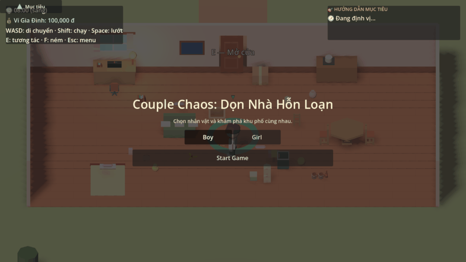
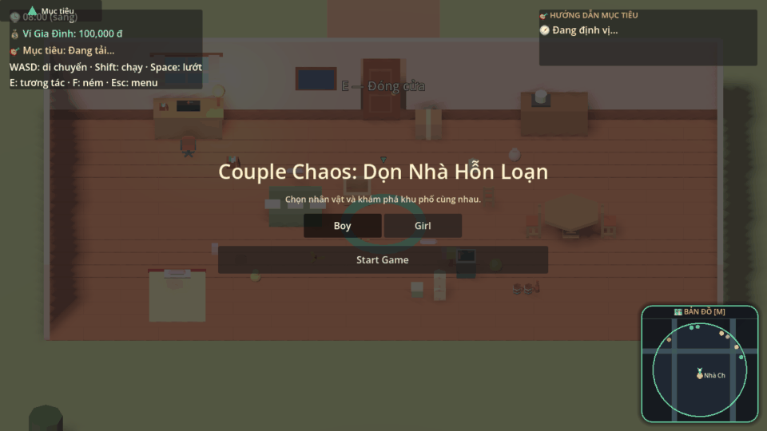
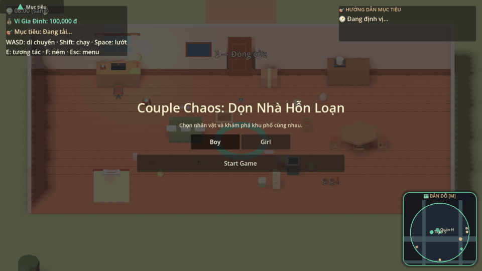
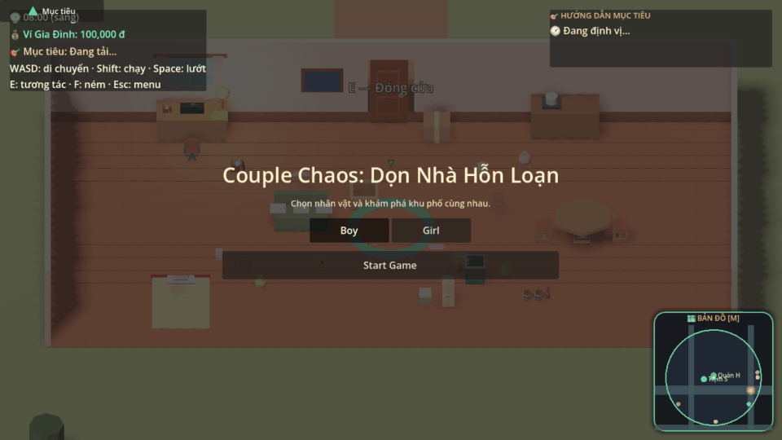
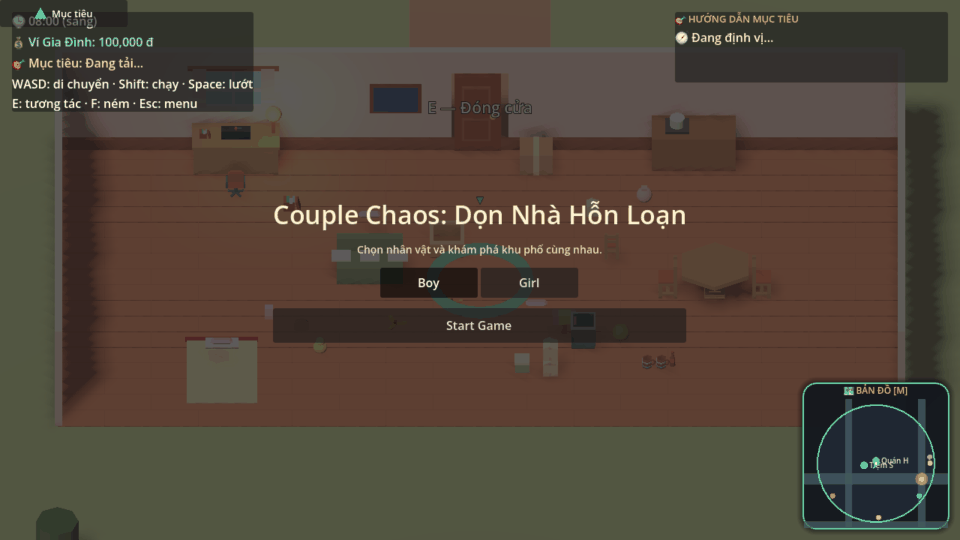
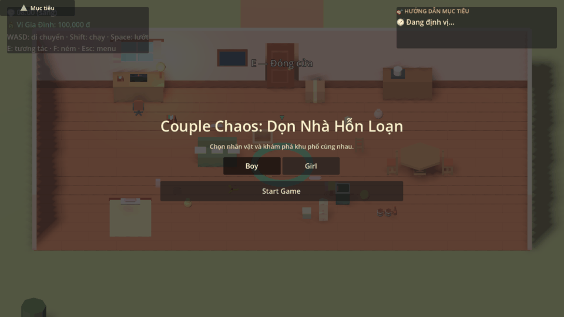
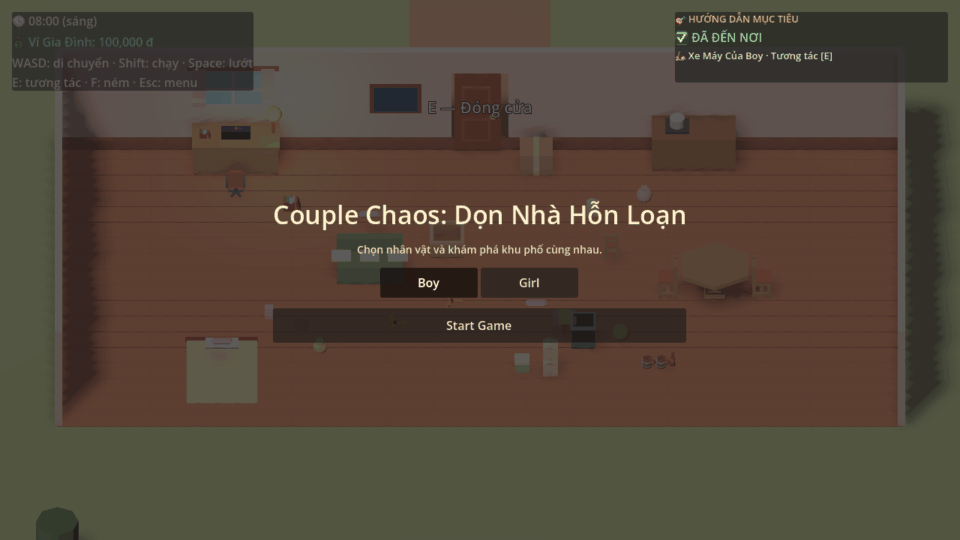
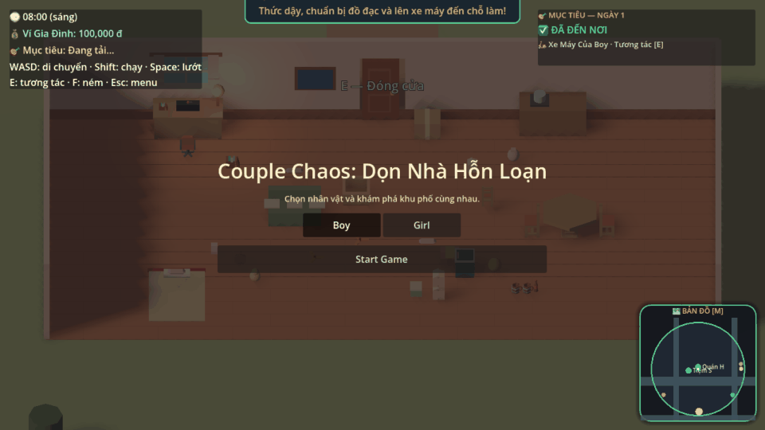
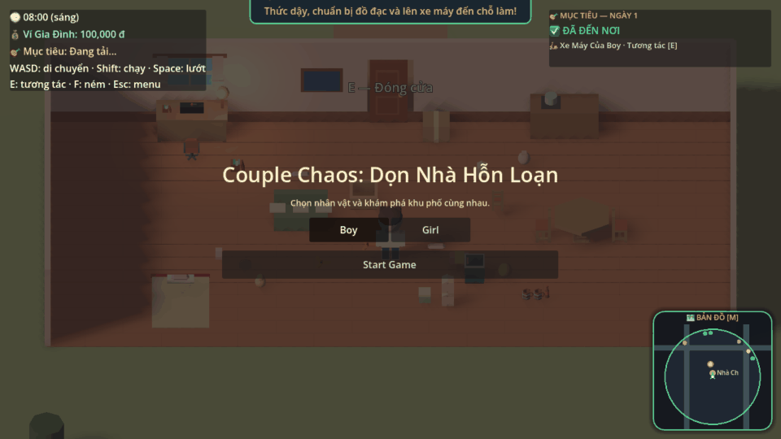
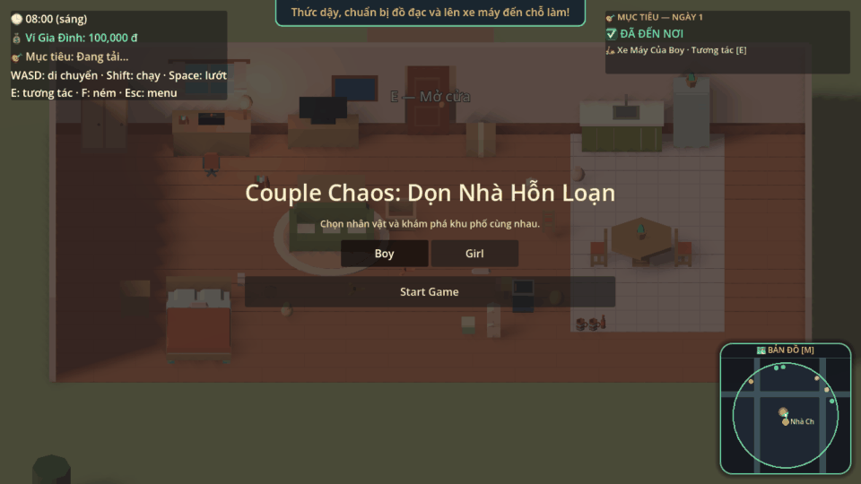

🎮 Couple Chaos — Visual Gameplay & Regression Dashboard
Godot 4.7.2 Stylized Low-Poly Life Simulation • Rendered Frame Captures (960x540, 30 FPS)
Generated: 2026-11-12T00:07:41
TC01
Character Selection
2.7s
PASS
Validates seamless switching between Boy and Girl characters, verifying 3D model instantiation, animation controller attachment, and bedroom spawn location.
Assertions Validated (6)
- ✓Character is Boy
- ✓Boy 3D visual model is active
- ✓Boy starts inside shared house interior (Z > 83)
- ✓Character switched to Girl
- ✓Girl 3D visual model is active
- ✓Girl remains inside shared house interior
Related Sources
res://scripts/player.gd
res://scripts/player_config.gd
res://scripts/animation_controller.gd
TC02
House Entry & Exit
8.8s
PASS

Tests complete house entry and exit cycle: validates closed door collision blocking passage, [E] interaction to open, smooth walking through doorway into yard, turning around to re-enter, closing door, and camera tracking.
Assertions Validated (13)
- ✓House front door exists
- ✓Door starts in closed state
- ✓Door collision active in closed state
- ✓Solid door collision prevents walking through closed doorway
- ✓Door opened after E interaction
- ✓Doorway collision disabled allowing pass-through
- ✓Player walked out of house into front yard (Z <= 80)
- ✓Player is within front yard bounds (Z >= 63)
- ✓Camera tracks player smoothly
- ✓Camera centered horizontally with player
- ✓Player walked back into house interior through open door
- ✓Door closed after second E interaction
- ✓Door collision re-enabled upon closing
Related Sources
res://scripts/room.gd
res://scripts/interactable.gd
res://scripts/player.gd
TC03
Motorcycle Riding & Parking
20.3s
PASS

Tests walking to motorcycle in front yard, mounting vehicle, folding kickstand, driving along road waypoints without building clipping, parking smoothly into garage workplace bay, and dismounting.
Assertions Validated (9)
- ✓Boy's commuter motorcycle exists
- ✓Motorcycle is available for mounting
- ✓Player mounted motorcycle
- ✓Kickstand folded up automatically
- ✓Player meta indicates riding state
- ✓Player dismounted motorcycle
- ✓Kickstand put down upon parking
- ✓Motorcycle neatly parked in garage bay
- ✓Player arrived at garage workplace without teleporting
Related Sources
res://scripts/neighborhood/player_scooter.gd
res://scripts/neighborhood/world.gd
TC04
Motorcycle Customer Arrival & Repair
11.2s
PASS

Tests realistic customer arrival along the road path into Bay 0, driver dismounting and ordering repair, player walking to workbench to pick up patch kit, interacting at Bay 0 to apply patch and pump air, payment processing, and customer riding away.
Assertions Validated (11)
- ✓GarageBusiness exists
- ✓Customer reached Bay 0 and is waiting for service
- ✓Customer driver stepped off motorcycle
- ✓Customer order registered in Bay 0
- ✓Boy picked up patch kit from workbench via physical interaction
- ✓Patch kit applied through station interaction; next step is pump_air
- ✓Patch kit consumed from player inventory
- ✓Order status marked PAID
- ✓Household wallet received +35,000đ
- ✓Customer celebrates completed service
- ✓Customer departed on motorcycle along road
Related Sources
res://scripts/neighborhood/business/garage_business.gd
res://scripts/neighborhood/business/motorcycle_customer.gd
res://scripts/neighborhood/business/business_order.gd
TC05
Hu Tieu Preparation & Opening
5.9s
PASS

Tests Hu Tieu stall starting in CLOSED state, player interacting with prep station, natural real-time cooking and preparation progress (0% -> 100%), transition to READY state, and player opening the shop to receive customers.
Assertions Validated (10)
- ✓HuTieuBusiness exists
- ✓Shop starts in CLOSED state
- ✓Shop is closed, customer arrivals blocked
- ✓Shop entered PREPARING phase
- ✓Preparation progress reached 100%
- ✓Shop naturally entered READY state
- ✓Prompt offers to open shop
- ✓Shop officially entered OPEN state
- ✓is_open flag is true
- ✓Overhead billboard reflects shop open status
Related Sources
res://scripts/neighborhood/business/hutieu_business.gd
res://scripts/neighborhood/business/business_shop.gd
TC06
Hu Tieu Customer Service
11.6s
PASS

Tests complete dining service cycle: customer arriving and seating at Table 0, placing order, player sequentially cooking dish (blanching noodles naturally, ladling broth, garnishing toppings), serving food to table, payment processing, eating, and customer departure.
Assertions Validated (13)
- ✓HuTieuBusiness exists
- ✓Customer is seated on chair
- ✓Customer placed order for 'Hủ tiếu Nam Vang'
- ✓Bowl in blanching strainer
- ✓Noodles cooked to perfection naturally
- ✓Hot bone broth ladled into bowl
- ✓Bowl fully prepared
- ✓Prepared dish is 'Hủ tiếu Nam Vang'
- ✓Order marked PAID
- ✓Shared wallet credited +45,000đ
- ✓Customer is eating served food
- ✓Hot noodle bowl visible on dining table
- ✓Customer finished meal and departed along sidewalk
Related Sources
res://scripts/neighborhood/business/hutieu_business.gd
res://scripts/neighborhood/business/hutieu_customer.gd
res://scripts/neighborhood/business/business_order.gd
TC07
Incorrect Order Rejection & Discard
2.5s
PASS

Tests order validation rejecting mismatched food orders: customer orders Nam Vang noodles, player prepares Pork Rib noodles instead, attempts to serve at dining table (rejected, 0đ reward, bowl preserved), and player discards wrong bowl at blanching pot.
Assertions Validated (9)
- ✓HuTieuBusiness exists
- ✓Bowl prepared
- ✓Prepared dish is 'Hủ tiếu sườn heo'
- ✓Customer ordered different dish 'Hủ tiếu Nam Vang'
- ✓Order REJECTED and remains PENDING
- ✓Zero reward granted for incorrect dish
- ✓Kitchen bowl was not consumed
- ✓Wrong bowl safely discarded to allow remaking
- ✓Bowl dish cleared
Related Sources
res://scripts/neighborhood/business/hutieu_business.gd
res://scripts/neighborhood/business/business_order.gd
TC08
Multiple Concurrent Customers
2.4s
PASS

Tests multiple concurrent customers dining at Hu Tieu tables and repairing motorcycles at Garage service bays simultaneously, validating independent order tracking, non-overlapping 3D positions, and capacity reservation bounds.
Assertions Validated (6)
- ✓Both businesses exist in world
- ✓Hu Tieu Customers occupy separate tables without overlapping (dist > 3m)
- ✓Customers have independent food orders
- ✓Both Hu Tieu tables marked occupied
- ✓Motorcycle customers occupy distinct bays without overlapping (dist > 2.5m)
- ✓Both garage bays properly marked as occupied
Related Sources
res://scripts/neighborhood/business/garage_business.gd
res://scripts/neighborhood/business/hutieu_business.gd
res://scripts/neighborhood/business/business_shop.gd
TC09
Navigation & Camera Tracking
2.1s
PASS
Tests the 3D workplace guidance navigation system, including screen-edge directional arrows, HUD objective cards, distance countdown, 3D pulsing ground beacon, arrival state detection, and orthogonal camera tracking without perspective distortion.
Assertions Validated (12)
- ✓WorkplaceGuidance system exists
- ✓HUD navigation card is visible on screen
- ✓Screen-edge pointer is visible
- ✓Navigation objective points to motorcycle
- ✓Target is initially at distance (> 3m)
- ✓Distance decreased as player approached target
- ✓Navigation marks 'arrived' when reaching target
- ✓Edge pointer hides automatically upon arrival
- ✓HUD label displays arrival confirmation
- ✓Ground beacon instance exists
- ✓Camera exists and is orthogonal
- ✓Camera projection is orthogonal (no perspective distortion)
Related Sources
res://scripts/workplace_guidance.gd
res://scripts/shared_camera.gd
TC10
Return Home & Persistence
4.8s
PASS

Tests end-of-day return home flow: revenue accumulation in household wallet, walking from front yard into bedroom, bed rest interaction triggering automatic state saving to disk, waking up, and reloading saved state to verify balance, earnings, and deduplication cache.
Assertions Validated (8)
- ✓Player entered house interior
- ✓Bed interactable exists
- ✓Player is resting in bed
- ✓Progression saved to disk automatically upon resting
- ✓Player woke up refreshed
- ✓Persisted balance matches after reload (255000 đ)
- ✓Persisted earnings match after reload (75000 đ)
- ✓Transaction history and idempotency cache preserved
Related Sources
res://scripts/economy/economy_save_system.gd
res://scripts/economy/household_wallet.gd
res://scripts/room.gd
res://scripts/interactable.gd
TC11
Customer Timeout & Departure
6.2s
PASS

Tests customer patience expiration: a customer is seated and places an order, the player does not serve the order in time, patience bar drains to 0%, the customer becomes frustrated, the order is marked FAILED with zero payment, and the customer departs cleanly, freeing the dining table.
Assertions Validated (10)
- ✓HuTieuBusiness exists
- ✓Customer seated and placed order
- ✓Order is initially PENDING
- ✓Order is in active queue
- ✓Order transitioned to FAILED after patience expired
- ✓Failed order removed from active orders queue
- ✓Customers lost counter incremented
- ✓Zero payment awarded to wallet for unserved order
- ✓Customer stood up and is leaving stall
- ✓Customer displayed angry frustration feedback
Related Sources
res://scripts/neighborhood/business/business_shop.gd
res://scripts/neighborhood/business/hutieu_business.gd
res://scripts/neighborhood/business/hutieu_customer.gd
res://scripts/neighborhood/business/business_order.gd
TC12
House & Business Upgrades Progression
4.5s
PASS

Tests progression mechanics for household and business upgrades: player walks to House Upgrade Board in bedroom, reviews Level 2 requirements, initiates two-step confirmation, executes house upgrade (wallet deducted 75,000đ, tiled kitchen spawned, room bounds expanded), verifies business equipment upgrade at Garage, and confirms save/load persistence.
Assertions Validated (16)
- ✓HouseProgressionManager and UpgradeBoard exist
- ✓House starts at Level 1
- ✓Upgrade board is interactive
- ✓Prompt shows Level 2 upgrade fee (75,000 đ)
- ✓Board entered confirmation mode for Level 2
- ✓Prompt requests confirmation ('Nhấn E lần nữa để XÁC NHẬN')
- ✓House successfully upgraded to Level 2 (Căn hộ ấm cúng)
- ✓Wallet deducted 75,000đ (new balance: 75000 đ)
- ✓Tiled kitchen area unlocked in Level 2
- ✓Room bounds physically expanded to accommodate kitchen
- ✓Garage business exists
- ✓Second bay starts locked
- ✓Second service bay unlocked
- ✓Second bay visual platform spawned in 3D world
- ✓Progression saved to disk
- ✓Reloaded save preserves house level 2
Related Sources
res://scripts/house/house_progression_manager.gd
res://scripts/house/house_upgrade_board.gd
res://scripts/room.gd
res://scripts/neighborhood/business/garage_business.gd
res://scripts/economy/economy_manager.gd
TC13
Visual Regression & System Integrity
1.8s
PASS

Executes critical regression checks: camera occlusion cutaway verification for trees/structures, UI vertical offset separation (speech labels vs bay status labels), duplicate reward rejection, corrupted save file recovery, and physical boundary collision enforcement.
Assertions Validated (11)
- ✓Environment trees present with foliage models
- ✓Camera instance valid and active
- ✓Garage Bay 0 status label exists
- ✓UI vertical clearance between speech (2.9m) and bay status (2.35m) is 0.55m (>= 0.5m, no overlap)
- ✓First claim of completed order succeeded (+20,000đ)
- ✓Second claim of same order was REJECTED by duplicate protection
- ✓Household wallet balance unchanged on duplicate claim attempt
- ✓First deposit with transaction ID succeeded
- ✓Duplicate deposit with same transaction ID blocked by idempotency cache
- ✓Corrupted save file safely recovered to default balance without crashing engine
- ✓Solid room wall collision prevents player from escaping house boundaries (Z: 92.2 <= 93.5)
Related Sources
res://scripts/shared_camera.gd
res://scripts/neighborhood/business/business_shop.gd
res://scripts/economy/economy_save_system.gd
res://scripts/economy/household_wallet.gd
res://scripts/room.gd